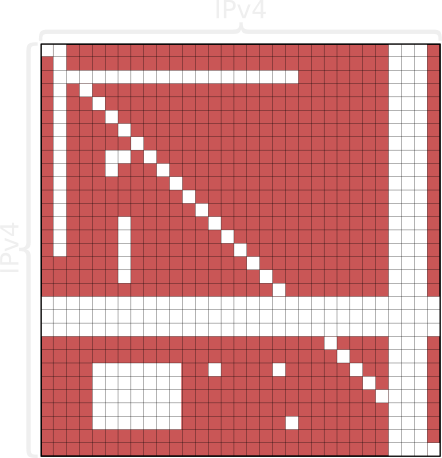
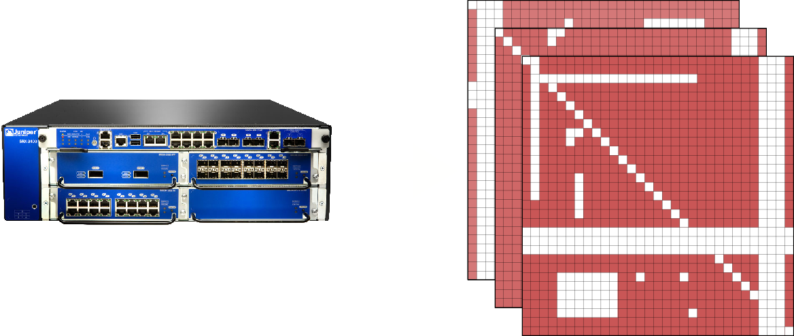
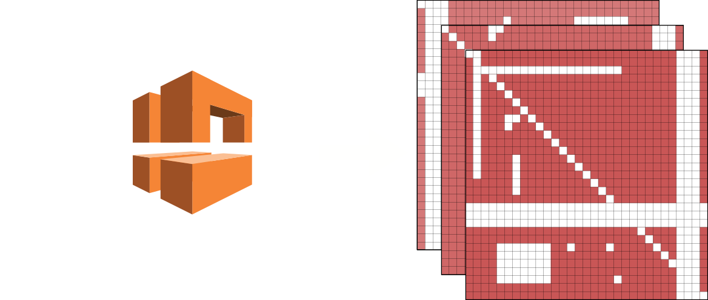
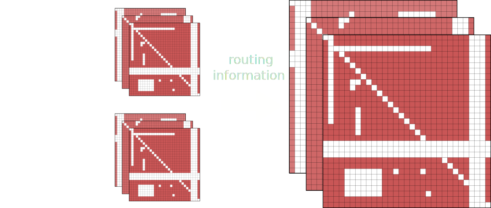

Testing and Monitoring Your Network Flows
With Fwunit
Dustin J. Mitchell / Michal Purzynski
confusion about what flows are and are not allowed
"please open port foo from bar to bing"
"that is already open.. R/WFM"
bugs where flow configurations are incorrect
"please open port foo from bar to bing"
"ok" / "that flow SHOULD be allowed already, let me know if it does not work"
"bar1 can’t access bing3.. missed something?"
flow changes required when deploying changes
"Please give all webheads access to the cache servers"
"uhh, what webheads? which cache servers?"
outages when flow modifications unintentionally break existing functionality
"Hi, my service timeouts"
"My bad... typo in a config"
trivial queries
"I need you to tell me what flows are allowed from/to my subnets"
"That sounds like a 3 month project"
What is fwunit?
Gather firewall configuration
Build a database
Allow queries against that data
Commercial Tools
They support all of the devices we don’t have
They have no idea about routing, multiple tables - that makes the result incorrect
They don’t scale and a single query takes over 40 minutes
Good luck scripting them. API - objects in XML?
Compliance rules are frequently hard coded to things like PCI
I want to use vim
Gathering Flow Data
Querying Flows
Comparing Flows Over Time
Verifying Compliance
Network Behavior
"The staging web servers should have access to the staging DB severs on port 5432."
"The office network should not have access to the DB servers."
"This route-table change should not affect reachability."
Test Driven Development

Unit Tests
def test_worker_ssh():
"""Bug 1289789: worker managers have outbound access to all managed
subnets via SSH"""
rules.assertPermits(
worker_managers,
managed_use1 + managed_staging_use1 + managed1_usw2,
'ssh')
Unit Tests
managed1_usw2 = IPSet([IP('10.14.136.0/24')])
managed1_use1 = IPSet([IP('10.13.136.0/24')])
managed1_staging_use1 = IPSet([IP('10.13.133.0/24')])
worker_managers = IPSet([
host('worker-manager1.scl3.mozilla.com'),
host('worker-manager2.scl3.mozilla.com'),
])

Readability?
match {
source-address [ worker-manager1 worker-manager2 ];
destination-address worker-subnets;
application junos-ssh;
}
then {
permit;
}
def test_worker_ssh():
"""Bug 1289789: worker managers have outbound access to all managed
subnets via SSH"""
rules.assertPermits(
worker_managers,
managed_use1 + managed_staging_use1 + managed1_usw2,
'ssh')
Unit Tests as Documentation
"""
Workers are EC2 instances created in various Amazon regions. They
are managed by worker-managers, both via the AWS APIs and directly
by connecting to the workers using SSH.
Workers are not able to communicate between themselves, but do have
full Internet access.
"""
Workers
Workers are EC2 instances created in various Amazon regions. They are managed by worker-managers, both via the AWS APIs and directly by connecting to the workers using SSH.
Workers are not able to communicate between themselves, but do have full Internet access.
test_worker_ssh - Bug 1289789: worker managers have outbound access to all managed subnets via SSH
Design
[IPv4] x [IPv4] => {permitted, denied}
[apps] x [IPv4] x [IPv4] => {permitted, denied}
Juniper
AWS
Combiner
Motivating Examples (revisited)
- Is this flow already open? Check the docs
- Is this new flow correct? Run the tests
- Which DB servers? Check the tests
- Oops, did my refactor break something? Run the tests
- General queries - what flows are allowed? See the docs
Future Work


Michal Purzynski
michal@mozilla.comDustin J. Mitchell
github.com/djmitchedustin@mozilla.com